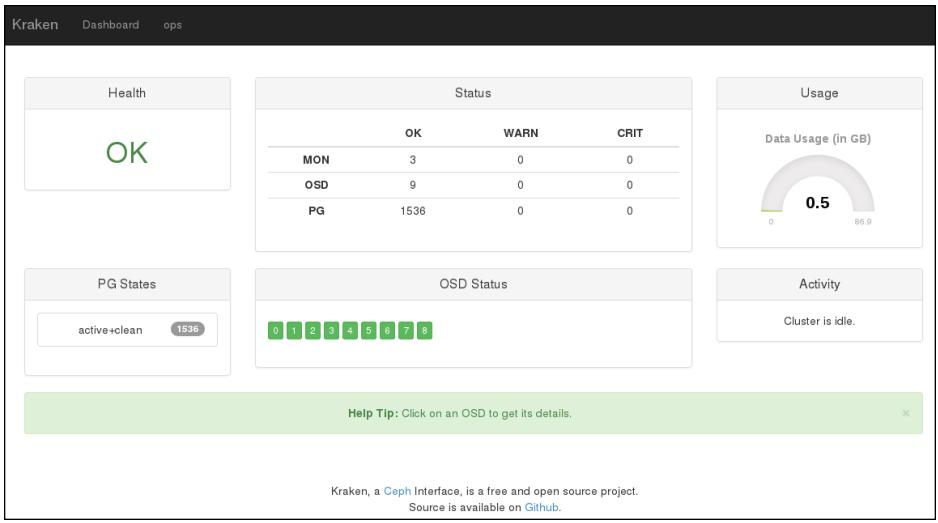
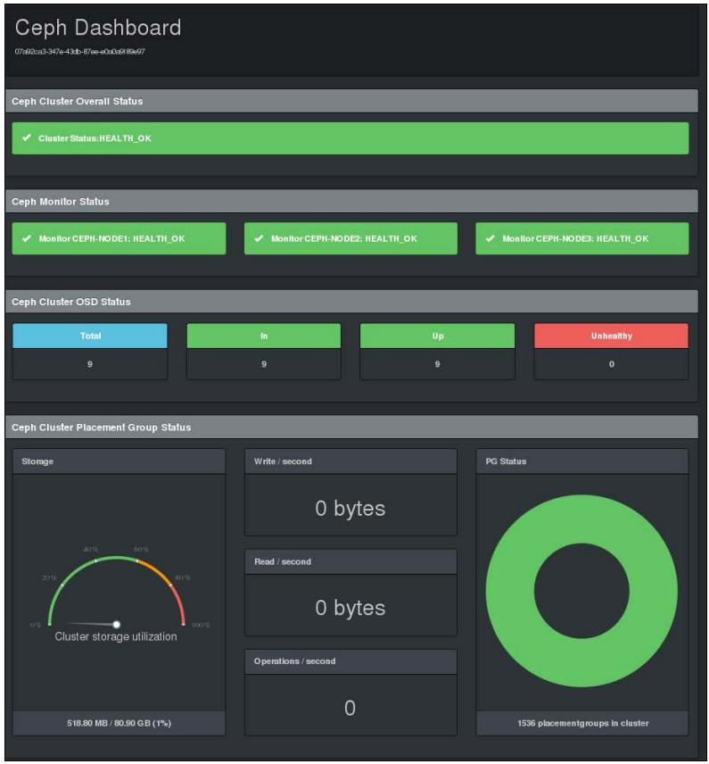

Глава 8. Наблюдение за вашим кластером Ceph
Наблюдение за кластером Ceph является одноой из главнейших обязанностей администрирования хранилища Ceph. Мониторинг играет важную роль при устранении неполадок кластера и избавлении от проблем когда кластер находится в опасном состоянии.
В данной главе мы рассмотрим следующие темы:
-
Наблюдение за кластером Ceph
-
Мониторинг MON (мониторов) и MDS (серверов метаданных)
-
Мониторинг OSD (устройств хранения объектов) и PG (групп размещения)
-
Инструментальные панели для Ceph с открытым исходным кодом, такие как Kraken, ceph-dash и Calamari
Содержание
Мониторинг является одной из наиболее важных функций для администратора системы хранения. К наблюдению за системой, как правило, приступают после проектирования кластера, его развертывания и внедрения служб. Вам, как администратору системы хранения, будет необходимо держать глаз на вашем кластере хранения Ceph и делать выводы о том, что происходит на данный момент. Регулярный и дисциплинированный контроль держит вас в курсе с вашим здоровьем кластера. Воспользовавшись уведомлениями мониторинга вы получите немного больше времени для принятия необходимых мер перед отключением услуги. Наблюдение за кластером Ceph является повседневной задачей, которая включает в себя мониторинг MON, OSD, MDS и PG, сохранению служб обеспечения таких как RBD, radosgw и CephFS, а также клиентов Ceph. Ceph поставляется с богатым набором встроенных средств командной строки и API для отслеживания этих компонентов. В дополнение к этому существуют проекты с открытым исходным кодом, которые изначально разработаны для наблюдения за кластерами Ceph с применением инструментальных панелей единой проекции с графическим интерфейсом.
Мониторинг имеет более широкую сферу применения, которая не должна быть ограничена уровнем программного обеспечения Ceph.
Он должен быть распространен на всю лежащую в его основе инфраструктуру, включающую аппаратные средства, сетевую среду и другие
сопутствующие системы, формирующие ваш кластер Ceph. Как правило, производители таких аппаратных средств предоставляют богатый
интерфейс наблюдения, который может входить в стоимость или продаваться дополнительно. Мы рекомендуем использовать такие
инструменты для мониторинга системы на уровне инфраструктуры. Помните, что чем более стабильна ваша базовая инфраструктура,
тем лучшие результаты вы можете получить от вашего кластера Ceph. Теперь мы сосредоточимся на инструментарии Ceph для
мониторинга, а также на некоторых других проектах для наблюдения на основе открытого кода. Ceph поставляется с богатым
инструментарием CLI для мониторинга кластера и устранения неисправностей. Для наблюдения за вашим кластером вы можете
использовать инструментарий сeph.
Чтобы проверить работоспособность кластера, воспользуйтесь командой сeph с
последующим параметром команды health.
# ceph health
Результаты вывода этой команды будут разделены на отдельные секции, отделяемые точкой с запятой:
[root@ceph-node1 ~]# ceph health HEALTH_WARN 64 pgs degraded; 1408 pgs stuck unclean; recovery 1/5744 objects degraded (0.017%) [root@ceph-node1 ~]#
Первый раздел вывода сигнализирует, что ваш кластер находится в состоянии предостережения,
HEALTH_WARN, поскольку 64
группы размещения
(PG) деградировали. Второй раздел показывает,
что 1408 PG не являются чистыми, а третий
раздел вывода показывает, что кластер в процессе восстановления одного из 5744 объектов и кластер деградировал на 0.017
процента. Если кластер находится в робочеспособном состоянии, вы получите вывод HEALTH_OK.
Чтобы узнать подробности о состоянии работоспособности вашего кластера Ceph, воспользуйтесь командой
ceph health detail; эта команда обо всех группах размещения, которые являются
неактивными и замусоренными, т.е. все PG, которые не являются чистыми и согласованными, а также деградировали будут перечислены
здесь со всеми деталями. Приводимый ниже снимок экрана демонстрирует детали работоспособности
сeph.
[root@ceph-node2 ceph]# ceph health detail HEALTH_ERR 61 pgs degraded; 6 pgs inconsistent; 1312 pgs stuck unclean; recovery 3/5746 objects degraded (0.052%); 8 scrub errors pg 9.76 is stuck unclean since forever, current state active+remapped, last acting [7,3,2] pg 8.77 is stuck unclean since forever, current state active+remapped, last acting [4,6.8] pg 7.78 is stuck unclean for 788849.714074, current state active+remapped, last acting [6,5,1] pg 6.79 is stuck unclean since forever, current state active+remapped, last acting [4,7,8] pg 5.7a is stuck unclean since forever, current state active+remapped, last acting [7,4,2] pg 4.7b is stuck unclean since forever, current state active+remapped, last acting [7,3,1] pg 11.74 is stuck unclean for 788413.925336, current state active+remapped, last acting [4,7,8] pg 10.75 is stuck unclean for 788412.797947, current state active+remapped, last acting [7,3,0]
Вы можете наблюдать за событиями кластера с помощью команды сeph с параметром
-w. Эта команда отобразит все события кластера, включая
INF (информационные), WARN (предостерегающие)
и ERR (ошибочные)
Ctrl-C
для возврата в оболочку:
# ceph -w
[root@ceph-node1 ~]# ceph -w
cluster 07a92ca3-347e-43db-87ee-e0a0a9f89e97
health HEALTH_OK
monmap e3: 3 mons at {ceph-node1=192.168.57.101:6789/0,ceph-node2=192.168.57.102:6789/0,
ceph-node3=192.168.57.103:6789/0}, election epoch 904, quorum 0,1,2 ceph-node1,ceph-node2,cep
h-node3
mdsmap e55: 1/1/1 up {0=ceph-node2=up:active}
osdmap e664: 9 osds: 9 up, 9 in
pgmap v3528: 1472 pgs, 13 pools, 1352 kB data, 2650 objects
525 MB used, 82319 MB / 82844 MB avail
1472 active+clean
2014-07-19 19:04:44.384956 mon.0 [INF] osd.0 192.168.57.101:6810/3280 failed (511 reports fro
m 3 peers after 1025.991577 >= grace 1023.635244)
2014-07-19 19:04:53.531842 mon.0 [INF] osdmap e665: 9 osds: 8 up, 9 in
2014-07-19 19:04:53.638975 mon.0 [INF] pgmap v3529: 1536 pgs: 64 creating, 176 stale+active+c
lean, 1296 active+clean; 1352 kB data, 525 MB used, 82319 MB / 82844 MB avail
2014-07-19 19:04:54.531821 mon.0 [INF] osdmap e666: 9 osds: 8 up, 9 in
2014-07-19 19:04:54.688132 mon.0 [INF] pgmap v3530: 1536 pgs: 64 creating, 176 stale+active+c
lean, 2 peering, 1294 active+clean; 1352 kB data, 525 MB used, 82319 MB / 82844 MB avail
2014-07-19 19:04:58.619026 mon.0 [INF] pgmap v3531: 1536 pgs: 53 creating, 148 stale+active+c
lean, 21 active+degraded, 56 peering, 1258 active+clean; 1352 kB data, 523 MB used, 82321 mb
/ 82844 mb avail; 79/5266 objects degraded (1.500%)
2014-07-19 19:04:59.958947 mon.0 [INF] pgmap v3532: 1536 pgs: 5 inactive, 70 degraded, 28 cre
ating, 3 active, 111 active+degraded, 333 peering, 986 active+clean; 1352 kB data, 524 MB use
d, 82319 mb / 82844 MB avail; 260/4716 objects degraded (5.513%)
Существуют и другие параметры, которые могут быть использованы с командой сeph для
получения различных видов детализации событий:
-
--watch-debug: Используется для отслеживания событий отладки -
--watch-info: Используется для отслеживания информационных событий -
--watch-sec: Используется для отслеживания событий безопасности -
--watch-warn: Используется для отслеживания предостерегающих событий -
--watch-error: Используется для отслеживания ошибочных событий
Чтобы узнать статистику использования пространства кластера, воспользуйтесь командой сeph
с параметром df. Эта команда покажет общий размер кластера, размер доступного
пространства, размер используемого пространства и их процентные выражения. Она также выведет информацию о пулах, такую как
имя пула, идентификатор (ID), использование, а также число объектов в каждом пуле:
# ceph df
[root@ceph-node1 ~]# ceph df
GLOBAL:
SIZE AVAIL RAW USED %RAW USED
82844M 82349M 495M 0.60
POOLS:
NAME ID USED %USED OBJECTS
data 0 0 0 0
metadata 1 5052 0 20
rbd 2 1344k 0 2568
.rgw 3 1040 0 6
.rgw.root 4 822 0 3
.rgw. control 5 0 0 8
.rgw.gc 6 0 0 32
.users.uid 7 787 0 3
.users.email 8 8 0 1
.users 9 20 0 2
.rgw.buckets.index 10 0 0 5
.rgw. buckets 11 365 0 1
.users, swift 12 8 0 1
[root@ceph-node1 ~]#
Проверка состояния кластера является наиболее распространенной и частой операцией при наблюдении за кластером Ceph. Вы можете
проверить состояние вашего кластера, используя команду сeph с параметром
status. Вместо подкоманды status, вы также можете
использовать в качестве параметра более короткую версию, -s:
# ceph status
В качестве альтернативы вы можете использовать:
# ceph -s
Следующий снимок экрана демонстрирует состояние нашего кластера:
[root@ceph-node1 -]# ceph -s
cluster 07a92ca3-347e-43db-87ee-e0a0a9f89e97
health HEALTH_OK
monmap e3: 3 mons at {ceph-node1=192.168.57.101:6789/0,ceph-node2=192.168.57.102:6789/0
,ceph-node3=192.168.57.103:6789/0}, election epoch 908, quorum 0,1,2 ceph-node1,ceph-node2,c
eph-node3
mdsmap e57: 1/1/1 up {0=ceph-node2=up:active}
osdmap e671: 9 osds: 9 up, 9 in
pgmap v3553: 1536 pgs, 13 pools, 1352 kB data, 2650 objects
495 MB used, 82349 MB / 82844 MB avail
1536 active+clean
[root@ceph-node1 ~]#
Команда выводит дамп с большим объемом полезной информации о вашем кластере Ceph. Ниже даются поямнения:
-
cluster: Предоставляет уникальный идентификатор кластера Ceph. -
health: Демонстрирует работоспособность кластера. -
monmap: Предоставляет версией эпохи, информацию, выбор версии эпохи и состояние кворума карты монитора. -
mdsmap: Предоставляет версию эпохи и состояние карты сервера метаданных. -
osdmap: Предоставляет версию эпохи и состояние карты устройства хранения объектов. -
pgmap: Предоставляет версию эпохи карты групп размещения, общее число групп размещения, количество пулов, а также общее число объектов. Она также отображает информацию об использовании кластера, включающую в себя размер используемого пространства, размер свободного пространства, а также общий размер. Наконец, отображает состояние PG.
Чтобы просматривать состояние кластера в режиме реального времени вы можете воспользоваться командой
ceph status совместно с командой Unix
watch для получения непрерывного вывода.
Ceph работает со строгой системой аутентификации на основе ключей. Все компоненты кластера взаимодействуют друг с другом
когда они осуществляют систему аутентификации на основе ключей. Вам, как администратору Ceph, возможно придется проверить спсики
ключей, управляемые кластером. Вы можете воспользоваться командой ceph с подкомандой
auth list для получения списка всех ключей.
# ceph auth list
![[Замечание]](../common/images/admon/note.png) | Замечание |
|---|---|
|
Чтобы получить дополнительную информацию о действиях команды вы можете использовать в качестве подпараметра
|
Как правило, кластер Ceph равертывается с более чем одним экземпляром MON для увеличения надежности и доступности. Поскольку существует большое количество мониторов, они должны достигать кворума, чтобы кластер работал надлежащим образом. Регулярный мониторинг MON имеет первостепенное значение.
Чтобы отобразить состояние кластера MON и карту MON, воспользуйтесь командой ceph с
одним из подпараметром mon stat или mon dump:
# ceph mon stat
# ceph mon dumpСледующий рисунок отображает вывод этих команд:
[root@ceph-node1 -]# ceph mon stat
e3: 3 mons at {ceph-node1=192.168.57.101:6789/0,ceph-node2=192.168.57.102:6789/0,ceph-node3
=192.168.57.103:6789/0}, election epoch 912, quorum 0,1,2 ceph-node1,ceph-node2,ceph-node3
[root@ceph-node1 ~]#
[root@ceph-node1 -]# ceph mon dump
dumped monmap epoch 3
epoch 3
fsid 07a92ca3-347e-43db-87ee-e0a0a9f89e97
last_changed 2014-06-04 21:07:47.147923
created 2014-06-02 00:51:00.765090
0: 192.168.57.101:6789/0 mon.ceph-node1
1: 192.168.57.102:6789/0 mon.ceph-node2
2: 192.168.57.103:6789/0 mon.ceph-node3
[root@ceph-node1 ~]#Для поддержания кворума мониторов Ceph кластер должен всегда иметь более 51 процента из доступных в кластере Ceph мониторв.
Проверка состояния кворума очень полезна во время поиска неисправностей мониторов. Вы можете проверить состояние кворума с
помощью команды ceph и ее подкоманды quorum_status:
# ceph quorum_status
[root@ceph-node1 ~]# ceph quorum_status
{ "election_epoch": 914,
"quorum": [
0,
1,
2],
"quorum_names": [
"ceph-node1",
"ceph-node2",
"ceph-node3"],
"quorum_leader_name": "ceph-node1",
"monmap": { "epoch": 3,
"fsid": "07a92ca3-347e-43db-87ee-e0a0a9f89e97",
"modified": "2014-06-04 21:07:47.147923",
"created": "2014-06-02 00:51:00.765090",
"mons": [
{ "rank": 0,
"name": "ceph-node1",
"addr": "192.168.57.101:6789\/0"},
{ "rank": 1,
"name": "ceph-node2",
"addr": "192.168.57.102:6789\/0"},
{ "rank": 2,
"name": "ceph-node3",
"addr": "192.168.57.103:6789\/0"}]}}
[root@ceph-node1 ~]#
Состояние кворума отображает election_epoch, которая является номером версии выбора,
а также quorum_leader_name, который обозначает имя хоста, являющегося лидером кворума (ведущим).
Оно также отображает эпоху карты MON, идентификатор кластера и дату создания кластера. Каждый монитор кластера выровнен в
соответствии со своим рангом. Для выполнения операции ввода/вывода клиенты вначале соединяются с ведущим монитором кластера,
если ведущий монитор недоступен, клиент соединяется со следующим по рангу монитором.
Устройства хранения объектов (OSD) в кластере Ceph являются рабочими лошадками; они выполняют всю работу нижнего уровня и осуществляют хранение данных пользователя. Наблюдение за OSD является важнейшей задачей и требует много внимания, поскольку существует большое число OSD для наблюдения и заботы о них. Чем больше ваш кластер, тем больше OSD будет у вас, а, следовательно, требуется более строгий контроль. Обычно в кластере Ceph содержится много дисков, следовательно шансы получения отказов OSD достаточно высоки Теперь мы сосредоточимся на командах Ceph для наблюдения за OSD.
Представление дерева OSD чрезвычайно полезно для просмотра состояний подобных IN или
OUT, а также UP или
DOWN. Представление дерева OSD отображает каждый узел со всеми его OSD, а также их
расположением в карте CRUSH. Вы можете проверить представление OSD, воспользовавшись следующей командой:
# ceph osd tree
Она выдаст следующий вывод:
[root@ceph-node1 ~]# ceph osd tree # id weight type name up/down reweight -1 0.08995 root default -2 0.02998 host ceph-node1 0 0.009995 osd.0 up 1 1 0.009995 osd.1 up 1 2 0.009995 osd.2 up 1 -3 0.02998 host ceph-node2 3 0.009995 osd.3 up 1 5 0.009995 osd.5 up 1 4 0.009995 osd.4 up 1 -4 0.02998 host ceph-node3 6 0.009995 osd.6 up 1 7 0.009995 osd.7 up 1 8 0.009995 osd.8 up 1 [root@ceph-node1 ~]# [root@ceph-node1 ~]#
Эта команда отображает различную полезную информацию об OSD Ceph, такую как вес, состояние UP
/DOWN, а также состояние IN
/OUT. Листинг вывода прекрасно отформатирован в соответствии с вашей картой Ceph CRUSH.
Если вы осуществляете поддержку большого кластера, такой формат даст вам преимущество локализации ваших OSD и
содержащих их серверов в длинном списке.
Чтобы проверить статистику OSD воспользуйтесь # ceph osd stat; эта команда поможет
вам получить эпоху карты OSD, общее число OSD, а также их состояния IN и
UP.
Для получения детализированной информации о кластере Ceph и OSD выполните следующую команду:
# ceph osd dump
Это очень полезная команда, которая выдаст эпохи карт OSD, подробности о пулах, содержащие идентификатор пула, имя пула, а также тип пула, который является реплицируемым (replicated) или удаляемым (erasure), набор правил CRUSH и группы размещения.
Данная команда также отобразит такую информацию, как идентификатор OSD, состояние. вес чистый интервал эпох для каждого OSD. Эта информация чрезвычайно полезна при наблюдении за кластером и поиском неисправностей.
Чтобы получить черный список клиентов воспользуйтесь следующей командой:
# ceph osd blacklist ls
Мы можем запросить карту CRUSH непосредственно из команды ceph osd. Утилита
командной строки катры CRUSH может сохранить много времени системному администратору, производящему просмотр и редактирование
карты CRUSH вручную.
Для просмотра карты CRUSH выполните следующую команду:
# ceph osd crush dump
Для просмотра правил карты CRUSH выполните:
# ceph osd crush rule list
Для подробного просмотра правил CRUSH выполните:
# ceph osd crush rule dump <crush_rule_name>
[root@ceph-node1 /]# ceph osd crush rule list
[
"data",
"metadata",
"rbd"]
[root@ceph-node1 /]#
[root@ceph-node1 /]#
[root@ceph-node1 /]# ceph osd crush rule dump data
{ "rule_id": 0,
"rule_name": "data",
"ruleset": 0,
"type": 1,
"min_size": 1,
"max_size": 10,
"steps": [
{ "op": "take",
"item": -1,
"item_name": "default"},
{ "op": "chooseleaf_firstn",
"num": 0,
"type": "host"},
{ "op": "emit"}]}
[root@ceph-node1 /]#Если вы осуществляете эксплуатацию большого кластера Ceph с несколькими сотнями OSD, иногда достаточно трудно найти
местоположение определенного OSD в карте CRUSH. Это также сложно выполнить, если ваша карта CRUSH содержит множественную
иерархию сегментов. Вы можете использовать ceph osd find для поиска OSD и его
местоположения в карте CRUSH:
# ceph osd find <Numeric_OSD_ID> # ceph osd find 1
[root@ceph-node1 /]# ceph osd find 1
{ "osd": 1,
"ip": "192.168.57.101:6805\/2583",
"crush_location": { "host": "ceph-node1",
"root": "default"}}[root@ceph-node1 /]#
[root@ceph-node1 /]#
[root@ceph-node1 /]# ceph osd find 2
{ "osd": 2,
"ip": "192.168.57.101:6800\/2311",
"crush_location": { "host": "ceph-node1",
"root": "default"}}[root@ceph-node1 /]#
[root@ceph-node1 /]#
Устройства хранения объектов (OSD) хранят группы размещения, а группы размещения, в свою очередь, содержат объекты.
Общая работоспособность кластера в основном зависит от групп размещения. Кластер будет оставаться в состоянии
HEALTH_OK только если все группы размещения имеют состояние
active + clean. Если ваш кластер Ceph выходит из рабочеспособного состояния, существует
вероятность, что группы размещения не являются active + clean. Группы размещения могут
демонстрировать множество состояний:
-
Peering: При пиринге (равноправном информационном обмене) группы размещения OSD, которые находятся в действующем наборе, сохраняют реплики этих групп размещения, приходят к соглашению о состоянии объекта и его метаданных в PG. После того, как пиринг завершен, OSD, которые хранят PG договариваются об их текущем состоянии.
-
Active: После завершения выполнения пиринга Ceph делает данную PG активной. При активном состоянии данные PG доступны в ее первичной PG, а также в ее репликах для операций ввода/ вывода.
-
Clean: В чистом состоянии первичное и вторичные OSD успешно размещены, никакие PG не перемещаются со своего правильного местоположения, а также все объекты реплицированы необходимое количество раз.
-
Degraded: Если OSD отключается (down), Ceph изменяет состояние всех своих PG, которые назначены на это OSD как деградировавшие. После того, как OSD переходит в
UP, оно должно выполнить пиринг вновь чтобы сделать деградировавшие PG чистыми. Если OSD остается отключенным и прошло более 300 секунд, Ceph восстанавливает все испытавшие деградацию PG из их реплик для поддержания необходимого числа реплик. Клиенты могут выполнять операции ввода/ вывода даже после того, как PG находятся в состоянии деградации. Может существовать еще одна причина по которой группа размещения может стать деградировавшей; а именно, когда один или более объектов внутри PG становятся недоступными. Ceph предполагает, что объекты должны быть внутри данной PG, однако они в реальности не доступны. В этом случае Ceph помечает PG как деградировавшую и пытается восстановить PG из ее реплик. -
Recovering: Когда OSD выключается (down). содержимое его групп размещения отстает от содержимого его реплик на других OSD. Как только OSD возвращается в рабочее состояние (
UP), Ceph инициализирует операцию восстановления на данной PG для приведения ее в соответствие с реплицированными PG в других OSD. -
Backfiling: Как только новое OSD добавлено в кластер, Ceph пытается выполнить балансировку данных перемещая некоторые PG с других OSD на это новое OSD; этот процесс называется заливкой (backfiling). После выполнения заливки для этих групп размещения, OSD может участвовать в клиентском вводе/ выводе. Ceph выполняет заливку гладко в фоновом режиме и гарантирует отсутствие перегрузки данного кластера.
-
Remapped: Каждый раз, когда возникают изменения в PG действующего набора, происходит миграция со старого действующего набора OSD на новый действующий набор OSD. Такая операция может занять некоторое время, причем продолжительность зависит от размера данных, которые должны быть перенесены на новое OSD. В течение этого времени старое первичное OSD и старая действующая группа обслуживают запросы клиентов. Как только операция по перемещению данных завершена, Ceph начинает использовать новое первичное OSD из действующей группы.
-
Stale: Ceph выдает свои статистические данные монитору Ceph каждые 0.5 секунды; может оказаться, что если первичное OSD группы размещения действующего набора отказывает в выдаче своих статистических данных своим мониторам, или если другие OSD сообщают об отключении (down) своего первичного OSD, монитор будет рассматривать эту PG как утратившую силу (stale).
Вы можете наблюдать за группой размещения с применением описываемых здесь команд. Ниже приводится команда для получения состояния группы размещения:
# ceph pg stat
[root@ceph-node1 ~]# ceph pg stat v4430: 1536 pgs: 1536 active+clean; 1352 kB data, 518 MB used, 82326 MB / 82844 MB avail [root@ceph-node1 ~]#
Вывод команды pg stat отображает много информации в специфическом формате:
vNNNN: X pgs: Y active+clean; R bytes data, U MB used, F GB / T GB availЗначения переменных здесь:
-
vNNNN: Это номер версии карты PG -
X: Это общее число групп размещения -
Y: Это значение устанавливает число PG с их состояниями -
R: Это значение задает объем сохраненных первичных данных -
U: Это значение описывает объем реально сохраненных данных после репликации -
F: Это размер оставшегося свободного пространства -
T: Это общая емкость
Чтобы получить список групп размещения выполните:
# ceph pg dump
Эта команда создаст много важной информации, такой как версия карты PG, идентификатор PG, состояние PG, а также действующий первичный набор по отношению к группе размещения. Вывод этой команды может быть огромным в зависимости от общего числа PG в вашем кластере.
Чтобы опросить определенную PG для получения подробной информации, выполните следующую команду, которая имеет синтаксис
ceph pg <PG_ID> query
# ceph pg 2.7d query
Чтобы получить список удерживаемых (stuck) групп размещения, мвыполните следующую команду, имеющую синтаксис
pg dump_stuck < unclean | Inactive | stale >
# ceph pg dump_stuck unclean
Серверы метаданных используются только для CephFS, которая на момент написания данного руководства не была готова к
промышленному применению. Сервер метаданных имеет различные состояния, например UP,
DOWN, ACTIVE и
INACTIVE. При выполнении мониторинга MDS вы должны убедиться, что состояние MDS
UP и ACTIVE. Следующие команды помогут вам
получить информацию относительно Ceph MDS.
Для проверки состояния MDS выполните:
# ceph mds stat
Для отображения подробностей сервера метаданных выполните:
# ceph mds dump
Вывод показан на следующем снимке экрана:
[root@ceph-node1 ~]# ceph mds stat
e85: 1/1/1 up {0=ceph-node2=up:active}
[root@ceph-node1 ~]#
[root@ceph-node1 ~]# ceph mds dump
dumped mdsmap epoch 85
epoch 85
flags 0
created 2014-06-02 01:05:20.199702
modified 2014-08-08 17:18:40.563408
tableserver 0
root 0
session_timeout 60
session_autoclose 300
max_file_size 1099511627776
last_failure 0
last_failure_osd_epoch 794
compat compat={},rocompat={},incompat={l=base v0.20,2=client writeable ranges,3=default file layo
uts on dirs,4=dir inode in separate object,5=mds uses versioned encoding,6=dirfrag is stored in om
ap}
max_mds 1
in 0
up {0=15699}
failed
stopped
data_pools 0
metadata_pool 1
inline_data disabled
15699: 192.168.57.102:6800/2046 'ceph-node2' mds.0.13 up:active seq 4252
[root@ceph-node1 ~]#
Администратор системы хранения Ceph будет выполнять большую часть работы по наблюдению за кластером с помощью CLI через команды, предоставляемые интерфейсом Ceph. Ceph также обеспечивает богатый интерфейс для API администратора, который может быть использован естественным путем для мониторинга всего кластера Ceph. Существует несколько проектов с открытым исходным кодом, которые пользуются REST API администратора и предоставляют результаты мониторинга в инструментальной панели с графическим интерфейсом, где вы можете быстро просмотреть весь ваш кластер. Сейчас мы сделаем обзор таких проектов с открытым исходным кодом и процедур их установки.
Kraken является инструментальной панелью с открытым исходным кодом, написанной на Python, предназначенной для сбора статистики и наблюдения за кластером Ceph, изначально разрабатываемой Дональдом Талтоном и присоединившимся позднее Дэвидом Мору Симардом.
Дональд является владельцем ИТ консалтинговой команды Merrymack. Он является квалифицированным инженером с более чем 20- летним опытом, а также он работал в таких компаниях как Apollo Group, Wells Fargo, PayPal и Cisco. Во время своего пребывания в PayPal и Cisco он сосредоточился в основном на OpenStack и Ceph. В то время, пока он работал в Cisco, он дал старт разработке Kraken. К счастью, Дональд также является техническим рецензентом данного руководства.
Дэвид Симард начал свою карьеру в 2006 году, когда он учился в колледже; он начал работу в веб- хостинговой компании iWeb в качестве временного работника во время своих летних каникул; позже, когда его работа переросла в штатную должность, он не имел никакого другого выбора, кроме как оставить учебу и продолжить работу над удивительным проектом в iWeb. Пршло уже 8 лет, с тех пор, как он начал работать с iWeb как специалист по ИТ- архитектуре. Он работает с облачной системой хранения, вычислениями в облаках и в других интересных областях.
Существует несколько ключевых причин, лежащих в основе развития Kraken. Первое, это то, что когда он был задуман, коммерческим пользователям Inktank был доступен только инструмент Ceph Calamari. Дональд полагает, что необходимо иметь хорошую приборную панель с открытым исходным кодом для наблюдения за кластером Ceph и его компонентами из одного окна; это приведет к лучшей управляемости и ускорит принятие Ceph в целом. Он принял это как вызов и запустил разработку Kraken. Дональд принял решение использовать ceph-rest-api для получения необходимых данных кластера для наблюдения за ним и создания отчетов. Для сведения всех этих данных в удобный формат приборной панели, Дональд также воспользовался некоторыми другими инструментами, такими как Python, Django, humanize и python-cephclient.
Дорожная карта для Kraken была разбита на ряд этапов. В настоящее время Kraken находится у первого верстового столба, который состоит из следующего набора свойств:
-
Использование данных кластера
-
Состояние монитора (MON)
-
Состояние устройства хранения объектов (OSD)
-
Состояние групп размещения (PG)
-
Лучший пользовательский интерфейс
-
Поддержка для множества мониторов
Следующий этап разработки Kraken будет включать оперативные изменения для OSD, настройку карты CRUSH в интерактивном режиме, аутентификацию пользователей Ceph, работу с пулами, управление блочными устройствами, а также метрики системы, такие как использование CPU и оперативной памяти. Вы можете отслеживать дорожную карту Kraken на стрнице GitHub по адресу https://github.com/krakendash/krakendash или файл readme Kraken. Kraken является продуктом с полностью открытым исходным кодом и следует лицензированию BSD. Разработчики, которые хотят внести вклад в Kraken могут отправить заявку Дональду и могут связаться с ним по don@merrymack.com
Строительные блоки Kraken из различных проектов с открытым исходным кодом, таких как:
-
Python 2.7 или последующие версии: Требуется для библиотек подобных множествам (collections).
-
ceph-rest-api: Содержится в бинарных файлах Ceph.
-
Django 1.6.2 или последующие версии: Это основной каркас для Kraken.
-
humanize 0.5 или последующие версии: Необходим для преобразования отображений свободных от данных.
-
python-cephclient 0.1.0.4 или последующие версии: В настоящее время используется Kraken, это обертка для ceph-rest-api. В первых версиях Kraken ceph-rest-api использовался непосредственно, без каких бы то ни было оберток. Именно Дэвид предписал обертывать ceph-rest-api, поскольку это предоставляет возможности использовать в будущем множество кластеров.
-
djangorestframework 2.3.12 или последующие версии: Используется для некоторых пользовательских добавлений API, которые могут остаться или исчезнуть в дальнейшем в Kraken.
-
django-fiter 0.7 или последующие версии: Требуется для Django.
В данном разделе мы узнаем как развернуть Kraken для наблюдения за вашим кластером Ceph.
Это небольшое приложение которому нужны незначительные системные ресурсы. В данной реализации мы воспользуемся машиной
ceph-node1; вы можете использовать любой узел кластера который имеет доступ к
кластеру Ceph. Следуйте следующим шагам из списка:
-
Установите подчиненные приложения для Kraken, такие как python-pip, screen и браузер Firefox, используя приводимую ниже команду. Если у вас уже установлен другой браузер, можете пропустить шаг с установкой пакета Firefox. Python-pip это средство управления пакетами, используемое для установки пакетов Python, которые понадобятся для установки подчиненных приложений. Kraken использует отдельные оконные сеансы для начала необходимых для инструментальной панели подпроцессов; эти экраны будут поддерживаться пакетом screen:
# yum install python-pip screen firefox
-
Установите необходимые для разработки библиотеки:
# yum install gcc python-devel libxml2-devel.x86_64 libxsltdevel.x86_64
-
Создайте каталог для Kraken:
# mkdir /kraken
-
Клонируйте репозиторий Kraken из GitHub:
-
# git clone https://github.com/krakendash/krakendash
Используйте средство управления пакетами Python для установки необходимых пакетов Kraken. таких, как Django, python-cephclient, djangorestframework, markdown и humanize:
# cd krakendash # pip install -r requirements.txt
-
Когда эти пакеты будут установлены, выполните
api.shиdjango.sh, которые запустят, соответственно, инструментальные панели ceph-rest-api и django python. Данные сценарии также выполнятся в независимых экранных окружениях; вы можете использовать экранные команды для управления этими сеансами. НажмитеCtrl + Dчтобы отключить сеанс экрана и перевести его в фоновый режим:# cp ../krakendash/contrib/*.sh . # ./api.sh # ./django.sh
-
Вы можете проверить сеансы экранов воспользовавшись командой
psи повторно подключить сеанс экрана с использованием команды-r:# ps -ef | grep -i screen
Вывод показан на следующем экранном снимке:
[root@ceph-client1 kraken]# ll total 12 -rwxr-xr-x. 1 root root 100 Aug 8 04:46 api.sh -rwxr-xr-x. 1 root root 93 Aug 8 04:46 django.sh drwxr-xr-x. 7 root root 4096 Aug 8 04:4S krakendash [root@ceph-client1 kraken]# [root@ceph-client1 kraken]# [root@ceph-client1 kraken]# ./api.sh [detached from 30167.api] [rootflceph-clientl kraken]# ./django.sh [detached from 30203.django] [root@ceph-client1 kraken]# [root@ceph-client1 kraken]# ps -ef | grep -i screen root 30167 1 0 05:44 ? 00:00:00 SCREEN -s api sudo ceph-rest-api -c /etc/ceph/ceph.conf —-cluster ceph -i admin root 30203 1 0 05:45 ? 00:00:00 SCREEN -s django sudo python krakendash/manage.py runserver 0.0.0.0:8000 root 30209 6858 0 05:45 pts/0 00:00:00 grep —color=auto -i screen [root@ceph-client1 kraken]#
-
Наконец, когда
api.shиdjango.shзапущены, откройте ваш веб браузер и наберите в строке навигацииhttp://localhost:8000/; вы должны будете увидеть состояние вашего кластера Ceph в инструментальной панели Kraken:
ceph-dash является другой свободной инструментальной панелью/ API мониторинга с открытым исходным кодом для кластера Ceph, которая была разработана Кристианом Эйхельманом, который работает на полную ставку в 1&1 Internet AG, Германия в качестве главного разработчика программного обеспечения. Кристиан начал разработку этого проекта в то время, когда существовало очень мало инструментальных панелей с открытым исходным кодом доступных для Ceph. Более того, другие доступные на то время инструментальные панели имели сложную архитектуру и не работали надлежащим образом с большими кластерами. Следовательно, Кристиан сосредоточился на разработке простой инструментальной панели на основе REST API, которая позволяет кластеру осуществлять наблюдение через простые вызовы REST, которые должны хорошо работать в больших кластерах Ceph.
Инструментарий ceph-dash был разработан на основе подхода не усложняй (keep-it-simple) для предоставления полного представления о состоянии работоспособности кластера Ceph через RESTful JSON API, а также графического интерфейса веб. Это приложение с низкими требованиями к ресурсам, которое не имеет зависимостей с ceph-rest-api. Это чистое приложение Python wsgi, которое общается с кластером исключительно через librados. В настоящее время ceph-dash обеспечивает ясный и простой графический веб- интерфейс, который способен предоставлять следующую информацию о кластере Ceph:
-
Общее состояние кластера с подробным описанием проблем
-
Поддержка многих мониторов и состояния каждого монитора
-
Ссотояние OSD (устройств хранения объектов) с количеством OSD в IN, OUT и нерабочем состояниях
-
Графическая визуализация емкости хранилища
-
Текущая пропускная способность, содержащая число записей в секунду, чтений в секунду и операций в секунду
-
Графическая визуализация состояния групп размещения
-
Состояние восстановления кластера
В продолжение всего этого, ceph-dash также предоставляет конечную точку REST, которая генерирует всю информацию о кластере в формате JSON, которая в дальнейшем может использоваться различными созидательными способами. Поскольку ceph-dash является проектом с открытым исходным кодом, любой может внести свой вклад, послав запрос Кристиану через https://github.com/Crapworks/ceph-dash
Если вы используете ceph-dash для целей тестирования/ разработки, вы можете выполнять его независимо. Для целей
промышленного применения строго рекомендуется развертывать приложение на wsgi совместимом веб- сервере (Apache, nginx и
тому подобных). Инструментарий ceph-dash использует микрокаркас Flask и компоновки (binding) ceph-python для
непосредственной связи с кластером Ceph. Доступ к кластеру через ceph-dash является полностью организованным в режиме
только для чтения и не требует никаких разрешений на запись. Инструментарий ceph-dash использует команду
ceph status с применением класса Python Rados.
Возвращаемый вывод JSON затем делается доступным либо через REST API, либо через графический веб- интерфейс, который
обновляется каждые 5 секунд.
В данном разделе мы ознакомимся с тем, как развернуть ceph-dash для кластера Ceph. Выполните следующие шаги:
-
Инструментарий ceph-dash должен быть установлен на машине, которая имеет доступ к кластеру Ceph. Поскольку он не требователен к ресурсам, ему может быть назначена любая из машин мониторов.
-
Создайте каталог для ceph-dash и клонируйте его репозиторий с GitHub:
# mkdir /ceph-dash # git clone https://github.com/Crapworks/ceph-dash.git
-
Установите python-pip:
# yum install python-pip
-
Установите пакет Jinja2:
# easy_install Jinja2
-
Когда установка завершена, вам хорошо было бы запустить графический интерфейс ceph-dash. Для запуска ceph-dash выполните:
# ./ceph-dash.py
Вывод отображен на следующем снимке экрана:
[root@ceph-node1 ceph-dash]# ./ceph-dash.py * Running on http://0.0.0.0:5000/ 127.0. 0.1 - - [08/Aug/2014 13:15:52] "GET / HTTP/1.1" 200 - 127.0. 0.1 - - [08/Aug/2014 13:15:55] "GET / HTTP/1.1" 200 - 127.0. 0.1 - - [08/Aug/2014 13:15:55] "GET /static/css/bootstrap.min.slate.css HTTP/1.1" 304 - 127.0. 0.1 - - [08/Aug/2014 13:15:55] "GET /static/js/jquery-2.0.3.min.js HTTP/1.1" 304 - 127.0. 0.1 - - [08/Aug/2014 13:15:55] "GET /static/js/bootstrap.min.js HTTP/1.1" 304 - 127.0. 0.1 - - [08/Aug/2014 13:15:55] "GET /static/js/globalize.min.js HTTP/1.1" 304 - 127.0. 0.1 - - [08/Aug/2014 13:15:55] "GET /static/js/dx.chartjs.js HTTP/1.1" 304 - 127.0. 0.1 - - [08/Aug/2014 13:15:55] "GET /static/js/ceph.dash.js HTTP/1.1" 304 - 127.0. 0.1 - - [08/Aug/2014 13:15:56] "GET / HTTP/1.1" 200 -
-
Откройте ваш веб браузер, наберите
http://localhost:5000/и запустите мониторинг вашего кластера с применением ceph-dash:
Calamari является платформой управления Ceph, привлекательной инструментальной панелью для наблюдения и управления вашим кластером Ceph. Она изначально разрабатывалась Inktank как проприетарное программное обеспечение, которое поставлялось совместно с продуктом Inktank Ceph Enterprise для их пользователей. Сразу после приобретения Inktank компанией Red Hat, данная платформа была объявлена Red Hat продуктом с открытым кодом 30 мая 2014. Calamari имеет несколько больший набор функциональности, а его дорожная карта весьма впечатляет. Calamari имеет две части, причем каждая имеет свой собственный репозиторий.
Fronted является основанным на браузере графическим интерфейсом пользователя, который в основном реализован на JavaScript. Часть fronted выполняет REST API Calamari и построена с использованием модульного подхода, следовательно каждый компонент fronted может быть обновлен или может подвергаться эксплуатации независимо. Calamari fronted является продуктом соткрытым исходным кодом в соответствии с лицензией MIT. Вы можете найти его репозиторий по адресу https://github.com/ceph/calamari-clients
Сервер Calamari (Calamari backend) является центральной частью платформы и написана на Python. Он также использует другие компоненты, такие как SaltStack, ZeroRPC, graphite, djangorestframework, Django и gevent и предоставляет новый REST API для интеграции с Ceph и другими системами. Calamari был заново переделан в этой новой версии, в которой он использует новый Calamari REST API для взаимодействия с кластером Ceph. Предыдущая версия использовала Ceph REST API, который имеет немного больше ограничений для этих целей. Сервер Calamari был переведен в ранг продукта с открытым исходным кодом с лицензией LGPL2+; вы можете найти репозиторий по адресу https://github.com/ceph/calamari
Calamari имеет хорошую документацию доступную на http://calamari.readthedocs.org. Если вы работатете с Calamari, являетесь разработчиком Calamari, или являетесь разработчиком, использующим Calamari REST API, эта документация будет хорошим источником информации для вашего старта с Calamari. Как и Ceph, Calamari также имеет обратную связь; вы можете принять участие в Calamari на IRC irc://irc.oftc.net/ceph, зарегистрировавшись через список рассылки ceph-calamari@ceph.com или отправив запрос на учетную запись Calamari GitHub по адресу https://github.com/ceph/calamari и https://github.com/ceph/calamari-clients.
Если вы хотите установить Calamari и вам интересно посмотреть как это выглядит, можете следовать моему блогу о Calamari с пошаговой установкой по адресу http://karan-mj.blogspot.fi/2014/09/ceph-calamari-survival-guide.html
В этой главе мы рассмотрели вопросы мониторинга Ceph, включающие наблюдение за кластером и различными компонентами кластера Ceph, такими как MON (мониторы), OSD (устройства хранения объектов) и MDS (сервер метаданных). Мы также узнали о наблюдении за группами размещения, в том числе об их различных состояниях. Состояния групп размещения очень динамичны и требует интерактивного наблюдения. Большинство изменений, которые испытывает кластер Ceph, происходят в их группах размещения. В этой главе также рассмотрены некоторые проекты инструментальных панелей графического интерфейса с открытым исходным кодом для мониторинга, такие как Kraken и ceph-dash. Эти проекты являются самостоятельными от сообщества Ceph, управляемыми и создаваемыми индивидуальными усилиями, но они имеют открытый исходным код, так что вы можете внести свой вклад в эти проекты. Мы также сделали обзор Calamari, который является службой управления и мониторинга для Ceph и недавно перешел в ряд продуктов с открытым исходным кодом от компании Red Hat (Inktank). В следующей главе мы узнаем о том, как Ceph расширяет свои преимущества для облачных платформ, таких как OpenStack. Мы также сосредоточимся на интеграции Ceph с OpenStack.